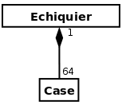

Qu'est ce qu'un diagramme de classe ?
Le diagramme de classe est le plus important au point de vu de la modélisation, il montre le la structure interne. Le diagramme de classe est la modélisation la plus proche du code.
Le diagramme de classe contient des classes et des relations entre les classes.
Les classes
Une classe contient des attributs et des méthodes. Une classe est représenté par un rectangle avec tout en haut le nom de la classe suivi des attributs et pour finir des méthodes. Les attributs sont des informations que la classe doit connaître. Une méthode est une opération que la classe contient.Voici la représentation schématique d'une classe :
Le nom de la classe doit obligatoirement commencer par une majuscule,une classe peut avoir son nom en italique cela signifie qu'on modélise une classe abstraite.
On peut également modéliser l'encapsulation des attributs et des méthodes.
Public : +
Protected : #
Private : -
Public ça signifie que tout le monde peut accéder à l'attribut ou la méthode, protocted l'élément peut être accedé seulement si l'élement est situé dans le conteneur ou qu'un de ses descendants peut y accéder et private seul un élément dans le conteneur peut voir l'élement.
Les relations
Les relations sont representés par un trait (bidirectionnel) qui permet de lier des classes, on peut limiter la navigation en mettant une flèche à la place (unidirectionnel). Il existe différents types de relations entre les classes :
L'héritage
L'héritage est modélisé par une flèche pleine blanche. La flèche part de la classe qui hérite de tous les attributs et méthode de la classe qui est pointé par la flèche. Exemple :

Les classes voiture et camion héritent de véhicule donc la classe voiture possède nombre de passage, poids et vitesse en attrbut et avance et allume radio en méthode. La classe camion possède poids, vitesse et cargaison en attribut ainsi que avance et charge cargaison en méthode.
La multiplicité
On appelle la multiplicité les cardinalités, les cardinalités sont les nombres qui sont dans les deux extrémités de la flèche. Exemple de cardinalité :
* cela signifie 0 ou plusieurs
1..* cela signifie 1 ou plusieurs
1 cela signifie un et un seul
0..1 cela signifie 0 ou 1
Exemple schématique :
Un aéroport possède une ou plusieurs villes alors qu'une ville possède aucun ou plusieurs aéroport dans cet exemple.
On peut avoir des relations qu'on nomm reflexive avec des cardinalités. Une relation reflexive c'est une relation qui va commence et fini par la même classe.
Exemple :
Une personne possède deux parents qui sont des personnes et possède aucun ou plusieurs enfants qui sont également des personnes donc on a une relation reflexive.
Agrégation
L'agrégation est représenté par un losange blanc suivi d'une flèche, il permet de représenter une importance d'une des classes dans la relation. Elle exprime une relation forte de type "Ensemble/element"
Exemple :
La voiture est plus importante que le moteur, le moteur est contenu dans la voiture mais si la voiture disparait le moteur existera toujours car c'est une relation d'agrégation.
Composition
La relation de composition est une relation très forte entre deux classes et représente l'importance d'une des classe, si la classe importante disparaît alors la classe qui a un lien de composition avec celle-ci sera détruite. Elle se modèlise par un losange noir suivi d'un trait.
Exemple de composition :

S'il n'y a plus d'échiquier alors il n'y aura plus de case.
Faire le diagramme de classe du smart garage
- Un véhicule est associé à un client et à un modèle de véhicule.
- Le temps des réparations, une puce est associée au véhicule. Une puce a un numéro d'identification.
- Une fiche suiveuse est associée à un véhicule. Elle fait référence à un ensemble de réparations. Une réparation est définie par un mot clef et une description textuelle et son état : en attente, en cours, terminée, ou abandonnée.
- Un commentaire peut être associé à une réparation, il peut contenir des photos.
- Un ou des mécaniciens sont associés à une réparation.
On va donc avoir ceci :
Cas 1 : Un véhicule est associé à un client et à un modèle de véhicule, on voit qu'il y a une relation entre véhicule et client et véhicule et modèle de véhicule dans le diagramme de classe.
Cas 2 : Le temps des réparations, une puce est associée au véhicule. Une puce a un numéro d'identification. Nous n'avons pas représentés la puce en tant que classe car ce n'est pas necessaire il est plus simple de mettre un identifiant au véhicule, l'identifiant joue le rôle de la puce.
Cas 3 : Une fiche suiveuse est associée à un véhicule. Elle fait référence à un ensemble de réparations. Une réparation est définie par un mot clef et une description textuelle et son état : en attente, en cours, terminée, ou abandonnée. Dans le diagramme de classe nous avons associés fiche suiveuse et véhicule, on nous dit que la fiche suiveuse fait référence à un ensemble de réparations donc il y a une relation entre fiche suiveuse et réparations avec pour cardinalité une réparation possède une fiche suiveuse et une fiche suiveuse possède 0 ou plusieurs réparations.
Cas 4 : Un commentaire peut être associé à une réparation, il peut contenir des photos. Nous avons donc mit en relation commentaire et réparation, un commentaire n'a qu'une et une seule réparation par contre réparation peut avoir 0 ou plusieurs commentaires, de plus on a mit une composition car si on détruit la classe réparation alors le commentaire n'existerait plus, nous avons rajoutés une classe photo car les commentaires peuvent contenir des photos et on également mit une composition car si le commentaire est supprimé la photo aussi.
Cas 5 : Un ou des mécaniciens sont associés à une réparation. On a fait donc une relation entre réparation et mécanicien avec pour cardinalité 1 dans réparation et 1 ou plusieurs pour le mécanicien.
Nous n'avons pas oubliés d'ajouter les informations des TD précédents tel que l'hérédité entre mécanicien et chef d'atelier. la secretaire n'est pas dans le diagramme de classe car elle ne fait rien, on peut tout modéliser sans l'avoir en tant que classe.
Rappel : Un rôle n'est pas forcément une classe.
A retenir
La composition dans un diagramme de classe est une relation très forte qui implique que si la classe qui est composé de est supprimé alors les composants sont aussi supprimés.
Généralement les attributs sont privés donc possèdent un signe " - " en face de leur nomination.
Erreur à ne pas faire
Echangez la position des cardinalités ! Attention ce n'est pas comme base de données.